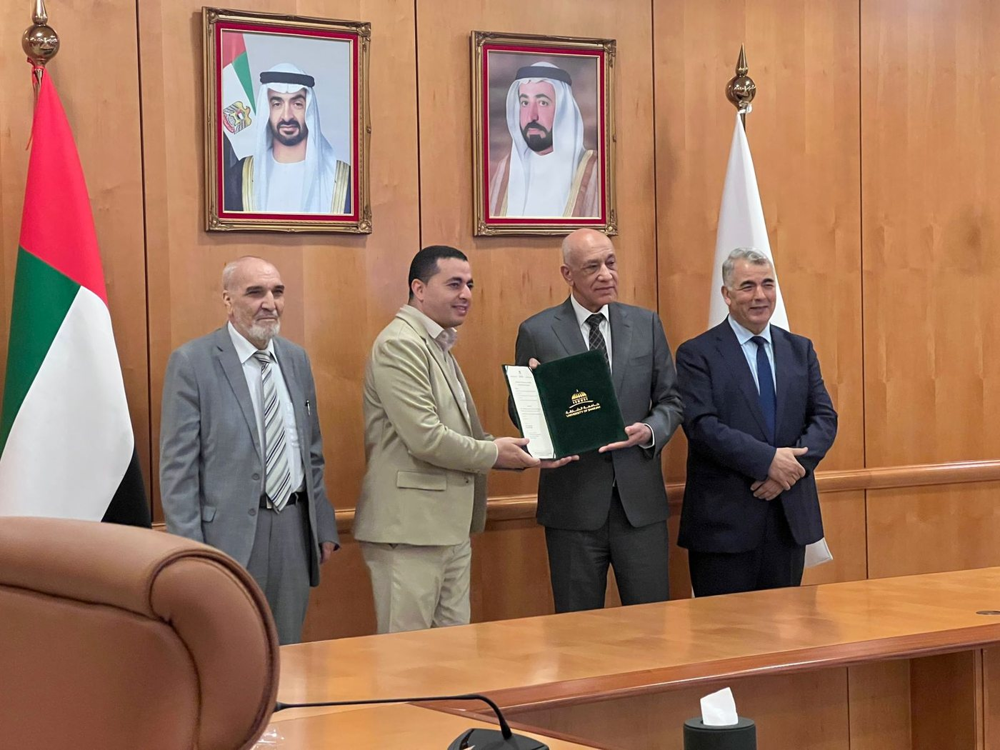
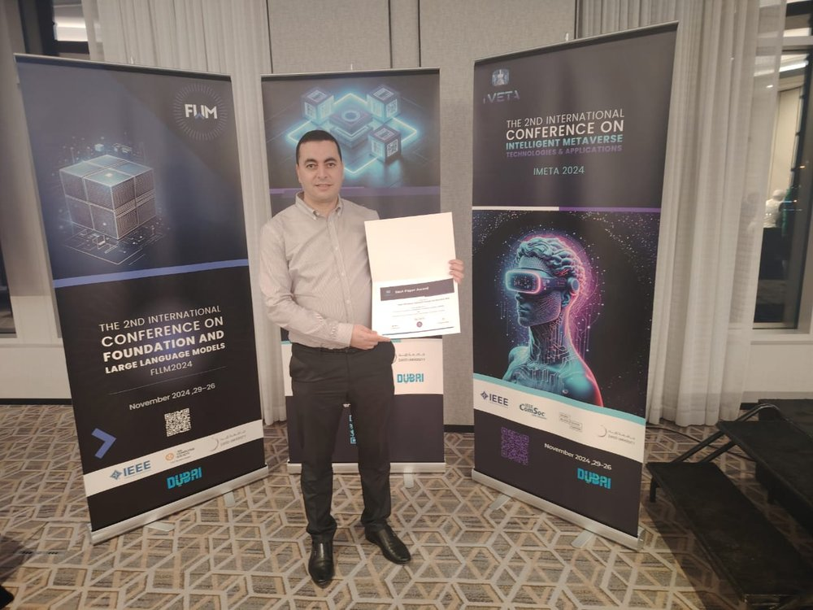

Honours
2026Top 2% of scientists worldwide, Stanford University / Elsevier ranking, 2025 edition announced 30 September 2026 (also listed in 2023 and 2024)
2026Promoted to Associate Professor (tenured), Department of Computer Science, University of Sharjah, January 2026
2025Keynote (plenary) speaker, 1st International Conference on Applied Artificial Intelligence and Emerging Technologies (AAIET 2025), University of Djelfa, Algeria, 15–16 December 2025
2025Letter of recognition from the IWCMC 2025 organising committee
2024Best Paper Award, 2nd International Conference on Intelligent Metaverse Technologies and Applications (iMETA 2024)
2024Best Paper Award, 4th International Conference on Advances in Communication Technologies and Computer Engineering (ICACTCE 2024)
2023Invited seminar speaker, College of Computing and Informatics, University of Sharjah: “Towards Achieving the Vision of Zero-Touch Management in 5G and Beyond Networks”, 15 November 2023
2022Elevated to IEEE Senior Member, November 2022
2022Two of the top 3 most-cited 2022 articles in the IEEE Open Journal of the Communications Society: “Why Should I Trust Your IDS?” and “Deep Learning for B5G Open Radio Access Network”
2010Ranked first in the Engineering class, University of Laghouat



